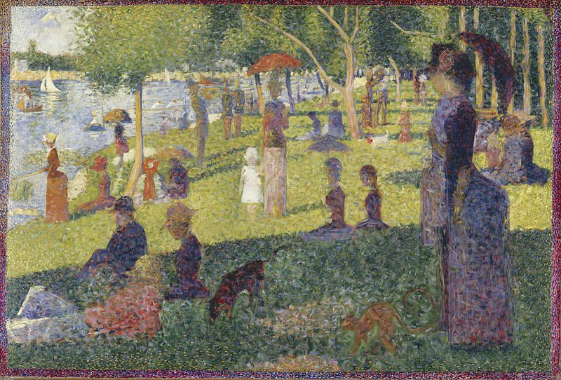
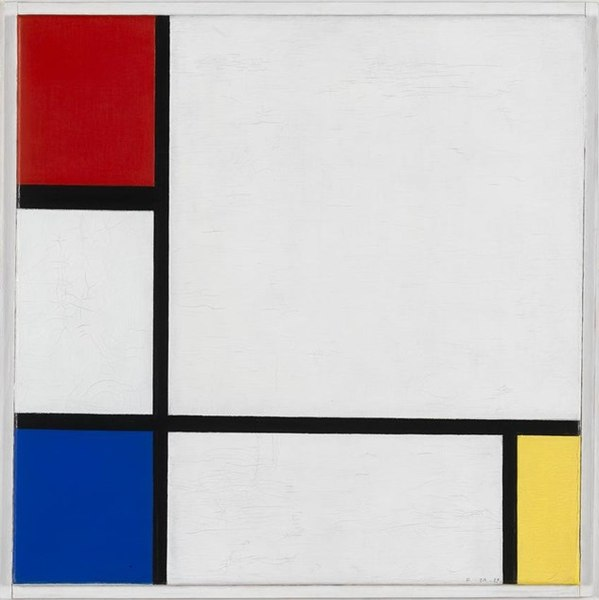

Kröller-Möller
A Fusion of Nature & Art
Description
Van Gogh
'Starry Starry Night' by
Don McLean references
this first portrait
The Starry Night ~ 1889
The Kröller-Müller museum houses several iconic pieces and has the most marvellous Van Gogh collection I know. When you walk through the museum, you realize that staff put much thought into presentation.
Royal decoration & desirability
Georges Seurat
Study for "A Sunday on La Grande Jatte" ~ 1884
Whether you walk through their sculpture garden, visit a particular section or simply stroll down the building in general, you will continually notice a natural flow.
The above is an example of pointulism: a multitude of individual dots creating a whole painting
Verdict
Piet Mondrian
Composition No. IV with Red, Blue and Yellow ~ 1929
What this museum does well:
- Balance of contrasts: use of void vs. paintings | use of shadows
- Plentiful natural lighting
- Strong integration with the famous nature outside (as it is situated in a Dutch National park)
- Carefully established compositions
- Collection includes some of the most renowned Dutch artists
Mondrian famously explores the concept of balance. He is seen as founder of many trends in modern art. His use of squares has most famously been adopted by later artists.
The Natural aspect

Van Gogh
Cafe Terrace at Night ~ 1888
The museum is situated in the heart of national park ‘De Hoge Veluwe’. Guests are permitted a free white bike to cycle to the location (or use a car). It is quite a long journey, but this mentally prepares you to enjoy the museum’s collection that much more. Besides, the sceneries themselves can be viewed as art in many ways.
Additional activities

Georges Seurat
La Chahut ~ 1890
In park ‘De Hoge Veluwe’, there are more sights to be seen. There is a museum about natural history, which hosts a beautiful collection on the underground world of mols, ants, degraded leafs and more. Another sight is the Jachthuis Sint Hubertus, which was the favourite property of the founding couple Kröller. The lake, wildlife, information on historic tales, peculiar architecture and gardenmake this a strong recommendation.
Conclusion
All in all, a visit to the Kröller-Müller has something to it that just ‘sits right’. The people are incredibly gentle and so is the surrounding nature. It’s a place to get away from city life and to heal from hardships. Truly, the healing aspect may sound peculiar, but the strong presence of nature surely make this a unique, vivid and nurturing experience.See Also
The website of museum Kröller-Müller